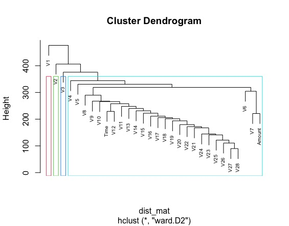

Clustering
Overview
Clustering is a process of grouping similar data points together based on their characteristics or attributes.
The goal of clustering is to identify patterns in the data and group similar data points together, while keeping
dissimilar data points apart.
In clustering, data points are grouped into clusters based on their similarity to other data points within the same cluster.
The clustering algorithm tries to find the optimal number of clusters that best represents the underlying patterns in the data.
There are different types of clustering algorithms :
- Hierarchical clustering
- K-means clustering
- Density-based clustering
- Data Cleaning: To begin with clustering we must have data which is numerical and unlabeled, then we remove or impute missing values, remove outliers, and correct any errors in the data. The data should be cleaned to ensure that the clustering process is not affected by noise or invalid data.
- Feature Scaling: Scale the features so that they have similar ranges and magnitudes. This helps to ensure that no one feature dominates the clustering process, and that each feature contributes equally to the final clusters. Common scaling techniques include standardization and normalization. We have used standardization in our dataset
- Dimensionality reduction: Our dataset has a large number of features (v1:v28), so to reduce the dimensionality of the data. Techniques such as principal component analysis (PCA) has been used to reduce the number of features while preserving the important patterns in the data.
These algorithms differ in the way they group data points together and in the criteria they use to determine the similarity between data points.
Partitional Clustering
Partitional clustering is a type of clustering algorithm that divides a dataset into non-overlapping clusters,
where each data point belongs to only one cluster. In partitional clustering, the number of clusters is typically
predefined, and the algorithm tries to group the data points into the specified number of clusters based on their
similarity.
The most popular partitional clustering algorithm is k-means clustering, which works by randomly selecting k initial
cluster centers and then iteratively refining the clusters until convergence. The algorithm assigns each data point
to the nearest cluster center based on some similarity measure, usually the Euclidean distance between data points
and cluster centers.
We have used k-means to group similar transactions together, where transactions in the same cluster
are more similar to each other than to transactions in other clusters.
Hierarchical Clustering
Hierarchical clustering is a type of clustering algorithm that groups data points into a hierarchical structure of clusters,
where clusters at one level are nested within clusters at higher levels.
In hierarchical clustering, there are two main approaches: Agglomerative and Divisive.
Agglomerative hierarchical clustering starts with each data point as its own cluster and iteratively merges the
closest pairs of clusters until only one cluster is left. Divisive hierarchical clustering starts with all data points
in one cluster and recursively splits the cluster into smaller clusters based on some criterion until each data point
is in its own cluster.
We have used hierarchical clustering for this data on the columns as the amount of data is huge
by taking in columns we will identify relationships between the columns which will provide how
connected columns are (features - v1:v28 for our dataset)
Difference b/w Partitional & Hierarchical
In hierarchical clustering, data points are grouped into a hierarchical structure of clusters, where each cluster is
nested within larger clusters. This structure is represented by a dendrogram, which shows the relationships between
the clusters. Hierarchical clustering does not require a predefined number of clusters
In partitional clustering, data points are grouped into non-overlapping clusters, where each data point belongs to only
one cluster. The number of clusters is typically predefined, and the algorithm tries to group the data points into the
specified number of clusters based on their similarity.
Data Preparation
 The data does not have any missing values, so we will move ahead and drop label column, and proceed to transforming our data
using StandardScaler
Dimensionality Reduction will help in reducing the features to the most important ones explaining more variability in the dataset
The data does not have any missing values, so we will move ahead and drop label column, and proceed to transforming our data
using StandardScaler
Dimensionality Reduction will help in reducing the features to the most important ones explaining more variability in the dataset
Code
You can find code for the Clustering techniques covered in this space:
Results
After dimensionality reduction, here is the scatter plot between two important principal component having the information
of fraudulent transaction and legitimate transaction.
Yellow Color - Fraudulent Transactions
Purple Color - Legitimate Transaction
Silhoutte Score
Further, below is the plot evaluating silhoutte score for the standardised dataset. From the above graph, optimal value for k can be 4, and we will test different values of k on our dataset.Elbow Method
Elbow Method does not provide any valuable information in this case
K-Means
Here are the results obtained by keeping different values for k, from the below plots k=4 does a great job, though it hasn't done a great job in identifying clear clusters as the data is very densed around 0.To conclude the results obtained from k-means, k=4 had a greater silhoutte evaulation score and does a great job in identifying the clusters.
Hierarchical Clustering
Due to the fact that this is a large dataset here we are performing heirarchical clustering with cosine similarity on columns rendered
a dendogram which classified all the similar columns relationship into one cluster and vice versa going above (Agglomerative).

Conclusion
Applying both k-means and hierarchical clustering algorithms to the dataset, we got the results that coincides with each other. This mean that both algorithms produced similar or identical cluster assignments for the data points. Though, looking at the clusters generated by k-means due to dense nature with lot of data points the results are not accurate. And also to identify the nature of columns and their relationship will help in future work.